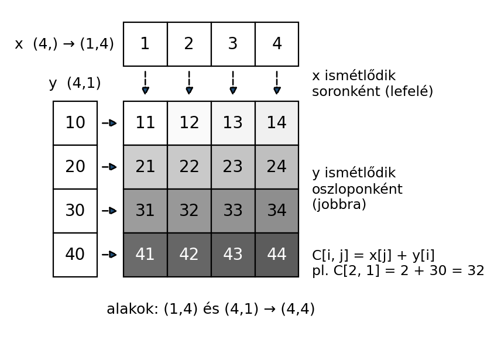

Ez az egység a NumPy ndarray objektumán keresztül
rögzíti a skalár, vektor, mátrix és négydimenziós képtenzor közötti
mozgás szabályait. A cél nem a NumPy API katalógusa, hanem az, hogy
minden művelet előtt és után egyértelmű legyen a shape, a
dtype és a redukált tengely. Az objektumok alakja a modell
bemeneti és kimeneti specifikációjának (az input és az output előírt
alakjának, dtype-jának és jelentésének) része 1.1.
Modell, tanulás és felhasználási szerződés; a tévesen értelmezett
alak csendben hibás számolást adhat.
Indító becslés: legyen
alakja (4,),
alakja (4,1). Az x + y kifejezés a
NumPy-értelmezés szerint milyen alakot ad? Becsülje meg, mielőtt tovább
olvas, és jegyezze fel a tippjét. Ha (4,4)-et tippelt, a
broadcasting szabályát már érzi; ha (4,)-et, akkor éppen ez
az egység fogja tisztázni, miért nem az.
ndarray,
dtype, shape és axisDefiníció (ndarray). A NumPy
ndarray homogén, többdimenziós tömbobjektum: minden
elemének azonos a típusa. Az ndarray objektum és az
adatpuffer külön dolog: a reshape lehetőség szerint nézetet
ad ugyanarra a pufferre, a shape attribútum kompatibilis
esetben közvetlenül átírható, a resize pedig helyben
megváltoztathatja a méretet. Ebben a könyvben ezért az alakot az
adatszerződés részének tekintjük, és módosítás helyett új, explicit
alakú nézetet vagy tömböt készítünk. A memóriában az elemek lineáris
sorrendben tárolódnak; a többdimenziós indexelést a shape
és a hozzá tartozó strides írja le. Az
ndarray.ndim a dimenziók száma, ndarray.size
az elemek darabszáma, ndarray.shape pedig egy tuple,
amelynek
-edik
eleme az
-edik
tengely hossza. A shape tehát az alak: a tengelyhosszak
rendezett tuple-je; a (4,) és a (4,1) ezért
két különböző alak.
Definíció (dtype). A dtype
az elemi tárolási típus: np.float32,
np.float64, np.int64, np.uint8,
np.bool_ stb. A dtype nem tartalmaz
mértékegységet, és a shape sem; mindkettő mértékegység
nélküli tárolási és szerkezeti információ, függetlenül attól a
dimenziófogalomtól, amelyet a fizikában használunk 1.4. Tanulási diagnózis és kísérleti napló. A
jelentést (például „intenzitás a
intervallumban”) a programozó dokumentálja, nem a tömb hordozza. A
tananyag a tanításhoz elsősorban float32-et használ, mert a neurális
hálók tanításában CPU-n és GPU-n egyaránt ez a legelterjedtebb numerikus
típus; az ellenőrzésekhez helyenként float64-et használunk.
Definíció (axis). Az axis
a redukciós műveletek tengelyparamétere. Az axis=0 az első,
axis=1 a második tengely mentén összegez; negatív index a
végétől számol. axis=None az összes elem feletti redukciót
jelenti. Például
esetén axis=0 a batch (köteg), axis=1 a
csatorna tengely.
A Python-szintaxis egyetlen pontja, amely itt félreérthető: a
(n,) egyelemű tuple, tehát
hosszú egydimenziós vektor; a (n,1) kétdimenziós
oszlopvektor. A kettő nem ugyanaz az objektum, és a broadcasting
eltérően kezeli őket.
Definíció (broadcasting alakszabálya, [D04] szerinti megfogalmazás). Legyen a két operandus alakja és . A rövidebb alak elé írjunk 1-eseket, amíg a két tuple hossza egyenlő nem lesz, majd jobbról balra igazítsuk a méreteket. Az elemenkénti bináris művelet akkor és csak akkor értelmezett, ha minden igazított pozícióban , vagy , vagy . Az eredmény mérete pozíciónként az a méret, amelyik nem 1 (ha mindkettő 1, akkor 1); ez általában a két méret maximuma, de a nulla méret kivétel: a és az eredménye , a és az eredménye . A végrehajtáskor az 1 méretű dimenzió virtuálisan ismétlődik az eredmény méretére.
Ez a szabály a NumPy API definíciója, nem tétel. A gyakorlatban az 1 méretű dimenzió ismétlését nem másolat, hanem 0 lépésközű virtuális tengely valósítja meg: az ilyen tengelyen a memóriabeli lépésköz (stride) 0, ezért ugyanaz az elem többször olvasódik, másolás nélkül [D04]. Az alábbi lemma a szabály első, gyakran félreértett következménye.
Lemma (külső összeg). Legyen
alakja (n,) és
alakja (n,1). Ekkor az x + y művelet eredménye
(n,n) alakú, és az eredmény
.
Bizonyítás. A jobbról igazított alakok: esetén — a hiányzó első dimenziót 1-nek tekintjük —, esetén . Az első pozícióban és szerepel, tehát broadcastelhető; a másodikban és , szintén broadcastelhető. Az eredmény mérete az első pozícióban az 1-től különböző , a másodikban szintén , tehát ; ez esetén is igaz (az eredmény alakú, üres), ezért itt nem a maximumot, hanem a „nem 1” szabályt használjuk. A virtuális ismétlés következménye: a második tengelyen hosszú, ezért a kimenet minden sorában megismétlődik, vagyis az elemhez járul; az első tengelyen hosszú, a második tengelyen 1, tehát minden oszlopban ismétlődik, vagyis az elemhez járul. Az összeadás elemenkénti, így . ∎
A lemma mutatja, hogy a (n,) vektor és a
(n,1) oszlopvektor összeadása nem a kívánt komponensenkénti
összeadás, hanem az összes lehetséges pár összegét tartalmazó mátrix. Ez
a labor és a gyakori tévedés szakasz központi esete.

Az indító becslés két alakjára a jobbról igazítás:
| pozíció jobbról | 2. | 1. |
|---|---|---|
x alakja (4,) |
1 | 4 |
y alakja (4,1) |
4 | 1 |
| eredmény alakja | 4 | 4 |
A rövidebb (4,) alak elé írt 1-gyel a két alak
(1,4) és (4,1); mindkét pozícióban
és
áll, ezért az eredmény (4,4), és eleme
.
Az NCHW-elrendezés tengelyei és a jobbról igazítás együtt (a 2×1×2×3
példa X tömbjével és egy (1,3) alakú
b vektorral):
| pozíció jobbról | 4. | 3. | 2. | 1. |
|---|---|---|---|---|
| tengely | N (batch) | C (csatorna) | H (magasság) | W (szélesség) |
X alakja |
2 | 1 | 2 | 3 |
b alakja |
1 | 1 | 1 | 3 |
| eredmény alakja | 2 | 1 | 2 | 3 |
A b (1,3) alakját a rövidebb tuple elé írt
1-esekkel (1,1,1,3)-ra egészítjük ki. A 4., 3. és 2.
pozícióban az 1 tetszőleges hosszal broadcastelhető, ezért
b a batch- és a magasságtengelyen ismétlődik, a
csatornatengelyen 1 marad, a szélességtengelyen pedig elemenként
párosul.
Legyen a vizsgált képtenzor
ahol a mátrixos írásmód az áttekinthetőség kedvéért elhagyja az 1
hosszú csatornatengelyt (a teljes alak (2,1,2,3)), a
dtype pedig float32. A matematikai jelölésben az indexelés
1-től indul, a Python 0-tól számol; az alábbi képletekben és a kódban
egységesen a Python 0-tól induló indexelését használjuk.
A teljes átlag:
amelyet a NumPy alapértelmezésben skalárként ad vissza
(type(X.mean()) numpy.float32, nem
ndarray); a shape == () ezt nem különíti el a
0-dimenziós tömbtől, amit np.asarray(X.mean()) ad
(ndim == 0, alakja ()). A típust ezért
isinstance(m, np.generic) és
isinstance(np.asarray(m), np.ndarray) kontrollal
ellenőrizzük. A batch-átlag axis=0 mentén redukál, tehát a
két kép pixelenkénti átlaga:
alakja (1,2,3). A csatornaátlag a batch, magasság és
szélesség felett átlagol, axis=(0,2,3), eredménye
(1,) és értéke
.
A képenkénti átlag axis=(1,2,3), eredménye
(2,), értékei
,
mert a két kép elemeinek összege 15, illetve 51, egyenként 6 elemmel
osztva.
Vegyük észre a tengelyek szerepét: ugyanaz az
más-más kérdésre más alakú eredményt ad. A modellkódban a
mean tengelyparamétere ezért része a specifikációnak.
Előfeltétel: Python 3.12 és uv; a laborcsomag
lab/ projektje, NumPy a lock fájlban rögzített verzióval
[D01]. A futtatás CPU-n történik, PyTorch nem kell hozzá. A laborcsomag
gyökeréből a parancs:
cd lab
uv sync
uv run python n005/lab_batch_mean.pyA szkript:
# lab/n005/lab_batch_mean.py
"""Kézi és NumPy batch-átlag, valamint a (n,)+(n,1) hiba javítása."""
import numpy as np
X = np.array([[1.0, 0.0, 2.0],
[0.0, 2.0, 1.0],
[2.0, 1.0, 0.0],
[1.0, 1.0, 2.0]], dtype=np.float32)
# Kézi átlag oszloponként: shape (3,)
manual_mean = np.array([X[:, j].mean() for j in range(X.shape[1])],
dtype=np.float32)
np_mean = X.mean(axis=0)
print("X shape:", X.shape)
print("manual_mean:", manual_mean)
print("np_mean:", np_mean)
# Ellenőrzés: az alakok és a két átlag egyezése
assert X.shape == (4, 3), X.shape
assert np_mean.shape == (3,), np_mean.shape
np.testing.assert_allclose(manual_mean, np_mean, rtol=1e-6, atol=1e-6)
expected_mean = np.array([1.0, 1.0, 1.25], dtype=np.float32)
np.testing.assert_allclose(np_mean, expected_mean, rtol=1e-6, atol=1e-6)
# Hiba: (3,) és (3,1) összeadása (3,3) mátrixot ad
x = np.array([1.0, 2.0, 3.0], dtype=np.float32) # (3,)
y = np.array([[10.0], [20.0], [30.0]], dtype=np.float32) # (3,1)
bad = x + y # (3,3) -- csendes, de rossz művelet
good = x + y[:, 0] # (3,) -- explicit 1D vektor
print("bad shape:", bad.shape)
print("good shape:", good.shape, good)
# Ellenőrzés: a rossz alak (3,3), a jó (3,), és az értékek stimmelnek
assert bad.shape == (3, 3), bad.shape
assert good.shape == (3,), good.shape
np.testing.assert_allclose(bad, np.array([[11, 12, 13],
[21, 22, 23],
[31, 32, 33]], dtype=np.float32))
np.testing.assert_allclose(good, np.array([11.0, 22.0, 33.0],
dtype=np.float32))
print("OK")MÉRT KIMENET (Python 3.12.3, NumPy 2.5.4, CPU, OMP_NUM_THREADS=1; a bemenet determinisztikus, ezért seed nem kell):
X shape: (4, 3)
manual_mean: [1. 1. 1.25]
np_mean: [1. 1. 1.25]
bad shape: (3, 3)
good shape: (3,) [11. 22. 33.]
OKAz utolsó OK sor az asszertek sikeres lefutását
jelzi.
A beadandó eredmény: a kézi és a NumPy-átlag egyezése, a
bad és good alakok megkülönböztetése, valamint
a saját futtatás kimenete. A seed (a véletlenszám-generátor
kezdőállapota) itt nem szükséges, mert az adatok determinisztikusan
vannak megadva; véletlen adatok generálásakor az azonos seed azonban
önmagában nem garantál minden platformon és NumPy-verzión bitazonos
ismételhetőséget [D04], ezért a protokoll a seed mellett a NumPy-verziót
is rögzíti.
F1 (fogalmi, nehézség 1). Magyarázza el, miért nem
felcserélhető a (n,), (n,1) és
(1,n) alak. Konkrétan: legyen
alakja (5,8),
alakja (8,),
alakja (1,8),
alakja (8,1). Mely X+b_i kifejezések
értelmesek, és mi az eredmény alakja?
F2 (levezetési, nehézség 2). Legyen
alakja (3,4),
alakja (4,),
alakja (3,1). A broadcasting szabályból vezesse le, hogy
A+b alakja (3,4) és eleme
;
mutassa meg azt is, hogy b[:,None] + c.T alakja
(4,3) és eleme
.
Mindkét állítást igazolja az alakszabály pozíciónkénti
alkalmazásával.
F3 (implementációs, nehézség 2). Írjon
batch_and_channel_mean(x) függvényt, amely x
alak (N,C,H,W) bemenetre visszaadja a batch-átlagot
((C,H,W)) és a csatornaátlagot ((C,)) float32
típusban. Ellenőrizze a fenti 2×1×2×3 példán az
np.testing.assert_allclose eszközzel; a tűrés
rtol=1e-6, atol=1e-6 (float32 mellett a gépi epszilon
nagyságrendje
,
ezért ennél lazább tűrés indokolt).
F4 (hibakeresési, nehézség 2). Az alábbi függvény
hibát okoz, amikor a hívó (4,3) kimenetet vár:
def add_bias(X, b):
return X + b # X.shape == (4,3), b.shape == (3,1)Azonosítsa a hiba okát a broadcasting szabály alapján, adja meg a
következményt, javítsa a függvényt úgy, hogy a kimenet
(4,3) legyen, és ellenőrizze egy konkrét tömbön.
F5 (kísérlettervezési, nehézség 3). Tervezzen kis
kísérletet annak eldöntésére, hogy egy adott
preprocess(images) függvény a csatornaátlag kivonását
batch-szintű statisztikával végzi-e, vagy rögzített, előre kiszámolt
átlaggal. Adja meg a kérdést, a két összehasonlítandó útvonalat, a
használt GlyphLab-állományt (a könyv saját, procedurálisan generált
szürke képadatkészletét: 180 jelenet, jelenetenként két nézet, összesen
360 kép, metadata.csv-vel; a teljes szerződést a függelék
A. A GlyphLab adatkészlet szakasza rögzíti), a
metrikát és a következtetés érvényességi korlátját.
F1 megoldás. A (n,) egydimenziós, a
(n,1) kétdimenziós oszlop-, a (1,n)
kétdimenziós sorvektor.
:
jobbról igazítva
alakja (1,8); jobbról az első pozíció
és
(egyenlő), a második
és
(broadcastelhető), eredmény (5,8).
:
alakok (5,8) és (1,8), ugyancsak
(5,8).
:
alakok (5,8) és (8,1); jobbról az első pozíció
és
(broadcastelhető), a második pozíció viszont
és
,
ezek sem nem egyenlők, sem nem 1, tehát ValueError. Az első
két kifejezés tehát értelmes, a harmadik nem. Az oszlopvektor-bias nem
adható hozzá így; csak akkor lenne kompatibilis, ha
első dimenziója is 8 lenne (ekkor azonban soronként egy-egy skalár
adódna hozzá, nem jellemzőnkénti bias).
F2 megoldás. A+b: a b
alakja (4,), helyettesítve (1,4). Az első
pozíció
és
→ broadcast, a második
és
→ egyenlő. Az eredmény (3,4). Az
kimeneti elemhez
járul;
stride-0 első dimenziója miatt minden sorban ugyanaz a
ismétlődik, tehát a hozzájárulás
.
b[:,None] + c.T: a bal oldal alakja (4,1), a
jobb oldalé (1,3). Az első pozíció
és
,
a második
és
,
mindkettő broadcastelhető; eredmény (4,3). A bal oldal a
második tengelyen ismétlődik, ezért eleme az
pontban
;
a jobb oldal az első tengelyen ismétlődik, ezért
;
az összeg
.
F3 megoldás.
import numpy as np
def batch_and_channel_mean(x: np.ndarray):
assert x.ndim == 4, f"Várt shape (N,C,H,W), kapott: {x.shape}"
batch_mean = x.mean(axis=0) # (C,H,W)
channel_mean = x.mean(axis=(0, 2, 3)) # (C,)
return batch_mean.astype(np.float32), channel_mean.astype(np.float32)
X = np.arange(12, dtype=np.float32).reshape(2, 1, 2, 3)
batch, channel = batch_and_channel_mean(X)
expected_batch = np.array([[[3, 4, 5], [6, 7, 8]]], dtype=np.float32)
expected_channel = np.array([5.5], dtype=np.float32)
np.testing.assert_allclose(batch, expected_batch, rtol=1e-6, atol=1e-6)
np.testing.assert_allclose(channel, expected_channel, rtol=1e-6, atol=1e-6)
print("OK", batch.shape, channel.shape) # OK (1, 2, 3) (1,)A szélsőeset: esetén a batch-átlag maga a kép, a csatornaátlag a képenkénti átlaggal egyezik.
F4 megoldás. A hiba oka: (4,3) és
(3,1) jobbról igazítva az első pozícióban
és
(broadcastelhető), a másodikban viszont
és
áll, amelyek sem egyenlők, sem 1, tehát a broadcasting szabály szerint a
művelet nem értelmezett; a NumPy ValueError-t dob. A
következmény az, hogy a hívó egyáltalán nem kap kimenetet. A javítás:
alakítsuk a bias-t egydimenzióssá, például b.reshape(-1)
vagy b[:, 0]; ekkor az alak (3,), a
broadcasting (1,3)-ként értelmezi, és az eredmény
(4,3). Ellenőrzés:
import numpy as np
def add_bias(X, b):
return X + b.reshape(-1)
X = np.ones((4, 3), dtype=np.float32)
b = np.array([[1.0], [2.0], [3.0]], dtype=np.float32)
out = add_bias(X, b)
assert out.shape == (4, 3)
np.testing.assert_allclose(out[0], [2.0, 3.0, 4.0], rtol=1e-6, atol=1e-6)F5 megoldásminta. Hipotézis: a
preprocess a csatornaátlag kivonásakor a batch
statisztikáját használja-e (batch-függő viselkedés), vagy egy rögzített,
előre kiszámolt átlagot. Protokoll: a GlyphLab
data/images.npy (360,1,24,24) alakú float32
tömbjéből számítsuk ki a csatornaátlagot a teljes train halmazon, és
rögzítsük; ezután válasszunk egy másik batch-et (például egy
validation batch-et), amelynek saját átlaga a rögzített értéktől
mérhetően eltér. Az első útvonal a teljes train halmazon számolt,
rögzített átlagot vonja ki, a második útvonal ugyanarra a batch-re a
batch saját átlagát. Metrika: a két kimenet maximális abszolút eltérése,
valamint külön-külön az eltérés a két hipotézis referenciakimenetétől.
Döntési szabály: ha a preprocess kimenete a rögzített
átlagú referenciával egyezik a tűrésen belül, a függvény nem
batch-függő; ha a batch-átlagú referenciával egyezik, batch-szintű
normalizálás van jelen. Kontroll: a két referencia különbsége legyen
nagyobb a tűrésnél, különben a kísérlet nem dönt. Érvényességi korlát: a
mérés egy implementációs tulajdonságot mutat, nem a modellminőséget; a
tanítás és kiértékelés közötti eltérés hatását külön, rögzített
protokollú kísérletben kell mérni.
A legveszélyesebb eset nem az, amikor a broadcasting hibát dob, hanem
amikor lefut, de más eredményt ad. A fenti lemmában x
(3,) és y (3,1) összeadása
(3,3) mátrixot hoz létre; ha a kód egy (3,)
vektort vár, a hiba csak akkor derül ki, amikor egy későbbi függvény
rossz alakot kap, vagy ami rosszabb, a modell csendben rossz értékekkel
tanul.
Ellenpélda a „mindig működik, tehát jó” érvelésre: az
batch és a
bias összeadása jellemzőnkénti torzítást ad, ahogyan az F4 javítása
mutatja; ha viszont valaki tévedésből a bias-t (4,1)
alakban adja meg, a broadcasting lefut, mert a (4,3) és a
(4,1) alak kompatibilis (első pozíció:
és
;
második:
és
).
Az eredmény (4,3) lesz, de minden sorhoz egyetlen skalár
adódik hozzá oszlopirányban, nem jellemzőnkénti bias; ez a csendes
hibaművelet éppen a 4-es (vagy 1-es) batch-méretnél fut le, más
batch-méretnél viszont ValueError jön. A shape-assert és a
kimenet explicit ellenőrzése ezért nem adminisztratív teher, hanem a
modell bemeneti specifikációjának része 1.1. Modell,
tanulás és felhasználási szerződés.
A nézet/másolat különbsége is hasonló csendes hibát okozhat: az
alapszeletelés nézetet (view) ad, amely osztozik a
memórián, ezért
x = np.arange(6, dtype=np.float32).reshape(2, 3)
row = x[0] # view
row[0] = -1.0 # x[0,0] is megváltozikHa független másolatra van szükség, explicit x.copy()
kell. A Python-listák szeletelése ezzel szemben másolatot ad; a két
viselkedés összekeverése nehezen lokalizálható hibákhoz vezet.
np.ones((3,1)) + np.arange(4)
kifejezésnek? Válasz: (3,4). Jobbról igazítva a
(3,1) és az (1,4) alak áll; az első pozícióban
és
,
a másodikban
és
,
mindkettő broadcastelhető, ezért az eredmény (3,4).(2,1,2,3). Mi az alakja a X.mean(axis=0)
és a X.mean(axis=1) kifejezésnek? Válasz:
(1,2,3), illetve (2,2,3).x[0] NumPy esetén nézet vagy másolat? Válasz: nézet,
hacsak a kód nem készít explicit másolatot.Visszatekintés: az 1.1. Modell, tanulás és felhasználási szerződés alfejezetben a modell bemenete batch, a hipotézisosztály pedig a paraméterezett leképezések halmaza; a shape mindkettő szerződésének része. Az 1.4. Tanulási diagnózis és kísérleti napló diagnózisban a tenzor alakját és dtype-ját különválasztottuk: az alak a tengelyek hossza, a dtype a tárolás típusa. A seed a generátor kezdőállapota, a futásazonosító a kísérleti napló kulcsa; ebben a laborban determinisztikus adat miatt seed nem kellett, de a jövőbeli véletlen adatgeneráláshoz a protokoll rögzíti [D04].
Az ndarray homogén, rögzített alakú többdimenziós tömb;
a dtype a tárolási típust, a shape a
tengelyhosszakat, az axis a redukciós irányt adja meg. A
broadcasting alakszabálya jobbról balra igazítva engedi meg az 1 méretű
dimenziók kiterjesztését; a (n,) és (n,1)
alakok összeadása ezért (n,n) mátrixot ad, nem vektort. A
labor a kézi és a NumPy batch-átlagot állítja elő, majd a téves
broadcastingból származó hibát explicit átalakítással javítja; a
laborban assertekkel ellenőrzött kulcsértékek: az átlag
[1. 1. 1.25], a bad alak (3, 3),
a good alak (3,). A nézet osztozik a memórián,
a másolat független; alapszeletelésnél ez eltér a Python-lista
viselkedésétől. A shape-ellenőrzés a modell bemeneti specifikációjának
része 1.1. Modell, tanulás és felhasználási
szerződés. Az induló becslésre a válasz: az x + y
alakja (4,4), mert a (4,) vektor a második, a
(4,1) oszlopvektor az első tengelyen ismétlődik (a külső
összeg lemmája).
A 2.2. Lebegőpont és stabil elemi számítás egység a lebegőpontos ábrázolás és a stabil elemi számítások felé lép: a float32 kerekítés, a katasztrofális törlés és a log-sum-exp alapjai ott épülnek erre a tenzoralapra.